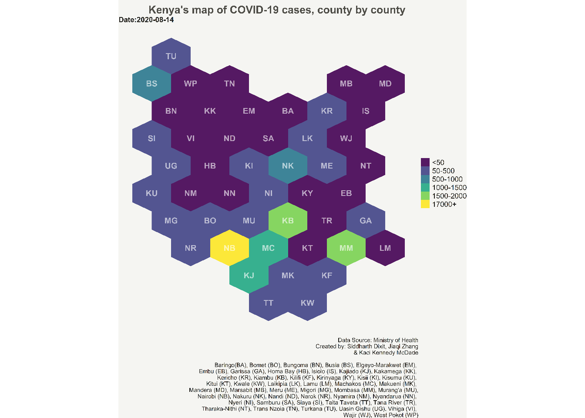
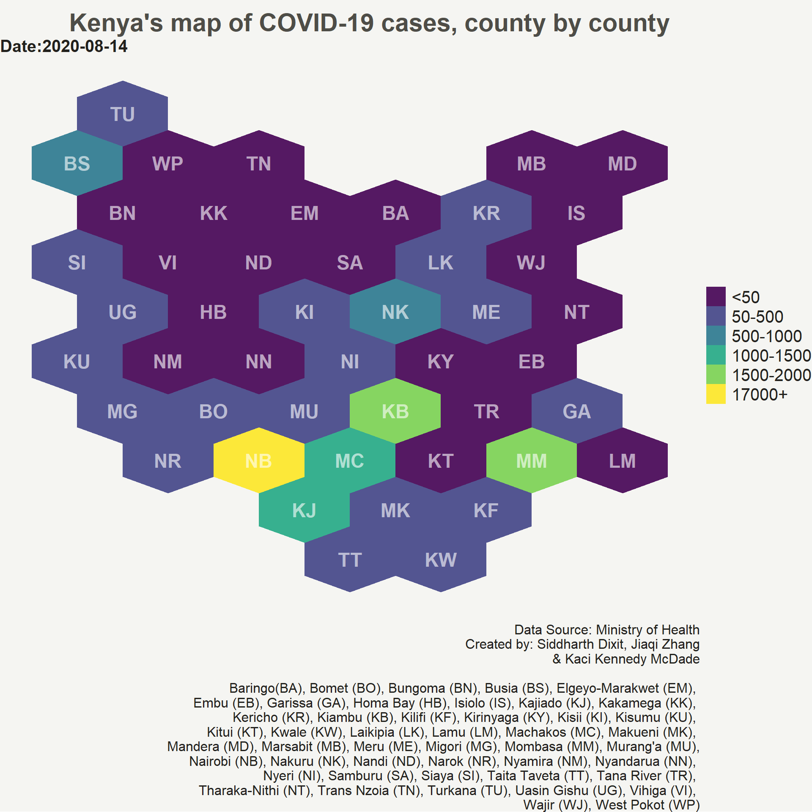
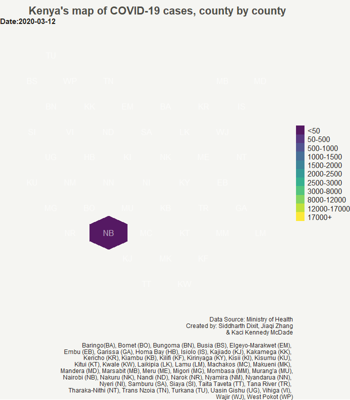

Part 2 (final)- How to create hexbin choropleth map to visualize data?
Static and animated map to visualize COVID-19 data for Kenya

In the first part of this blog we read Kenya’s shapefiles from GADM, and county name abbreviations which will be shown on the the chart instead of full names to avoid clutter on the map. Then, we used “geogrid” package of R to convert the map polygons i.e. the polygons of Kenya’s counties into hexagons.
Calculating the centroid of each hexagon
After creating the polygon hexagons, we calculate the centroid of each hexagon. We will use the centroid values to position the county abbreviation names on the chart. To calculate the centroid of hexagons we will use rgeos library which is used for topology operations on geometries.rgeos has a handy gCentroid() function which will provide us the centroid of each hexagon of each county polygon for Kenya.
#calculating the centroid of hexgons
library(rgeos)
centers <- data.frame(gCentroid(resultreg, byid = TRUE), id=resultreg@data$ABV)
#Following table shows the X, Y coordinates of centroid for each polygon
head(centers)
## x y id
## ID1 38.17338 -3.548623 TT
## ID2 39.21422 -3.548623 KW
## ID3 37.65295 -2.647223 KJ
## ID4 38.69380 -2.647223 MK
## ID5 39.73465 -2.647223 KF
## ID6 36.09168 -1.745822 NR
Tidying the shapefile
You might recall that we used resultreg dataframe which had original shapefile data and was assigned to new position based on the position of hexagons that we created. However, the data is still not in a tidy format i.e. this data cannot be used in ggplot to draw charts. Therefore, we use tidy function from broom package to create a new tidied data frame.
Notice that we use an attribute region in the function. This attribute makes sure that while tidying the shapefile data, the region i.e. county names are not removed.
library(broom)
#tidy() function of broom package returns the statistical findings of the model (such as coefficients)
#by specifying the region attribute we keep the region name
# tidy() function turns the data frame into a format which can be used in ggplot.
resultreg_fort <- tidy(resultreg, region = "NAME_1")
Below are the top five rows of the tidied shapefile data.
head(resultreg_fort)
## # A tibble: 6 x 7
## long lat order hole piece group id
## <dbl> <dbl> <int> <lgl> <fct> <fct> <chr>
## 1 38.2 3.06 1 FALSE 1 Baringo.1 Baringo
## 2 38.7 3.36 2 FALSE 1 Baringo.1 Baringo
## 3 39.2 3.06 3 FALSE 1 Baringo.1 Baringo
## 4 39.2 2.46 4 FALSE 1 Baringo.1 Baringo
## 5 38.7 2.16 5 FALSE 1 Baringo.1 Baringo
## 6 38.2 2.46 6 FALSE 1 Baringo.1 Baringo
Reading COVID-19 confirmed daily cumulative cases of Kenya and adding it to our tidy shapefile data
Note: This is not the latest data of confirmed daily cases. But, one can easily update this chart with latest data by using the methodology outlined in this post. I will also like to thank my colleagues Jiaqi Zhang and Kaci Kennedy McDade for helping me obtain the COVID-19 confirmed daily cases data for Kenya.
Now, we read the COIVID-19 confirmed cumulative cases and name it as df.
##Reading the COVID-19 daily cases dataset
df <- read_excel(here("./content/post/2021-03-07-hexbin/Kenya.xlsx"))
#converting into `Date` column in the dataframe into date format
df$Date <- as.Date((df$Date))
#printing the top five rows
head(df)
## # A tibble: 6 x 3
## Date Region Confirmed
## <date> <chr> <dbl>
## 1 2020-03-12 Nairobi 1
## 2 2020-03-13 Nairobi 1
## 3 2020-03-14 Nairobi 1
## 4 2020-03-15 Nairobi 3
## 5 2020-03-16 Nairobi 3
## 6 2020-03-17 Nairobi 4
We will be using the names of counties to join the daily cases dataframe with the shapefile dataframe. However, to accomplish this task we need the names of counties in both the dataframe to be same. Therefore, first we check whether there is any mismatch in the county names between the two dataframes.
#compare the region name column in `resultreg_fort` dataframe to region column of `df` to see which rows match.
resultreg_fort$id %in% df$Region
## [1] TRUE TRUE TRUE TRUE TRUE TRUE TRUE TRUE TRUE TRUE TRUE TRUE
## [13] TRUE TRUE TRUE TRUE TRUE TRUE TRUE TRUE TRUE TRUE TRUE TRUE
## [25] TRUE TRUE TRUE TRUE FALSE FALSE FALSE FALSE FALSE FALSE FALSE TRUE
## [37] TRUE TRUE TRUE TRUE TRUE TRUE TRUE TRUE TRUE TRUE TRUE TRUE
## [49] TRUE TRUE TRUE TRUE TRUE TRUE TRUE TRUE TRUE TRUE TRUE TRUE
## [61] TRUE TRUE TRUE TRUE TRUE TRUE TRUE TRUE TRUE TRUE TRUE TRUE
## [73] TRUE TRUE TRUE TRUE TRUE TRUE TRUE TRUE TRUE TRUE TRUE TRUE
## [85] TRUE TRUE TRUE TRUE TRUE TRUE TRUE TRUE TRUE TRUE TRUE TRUE
## [97] TRUE TRUE TRUE TRUE TRUE TRUE TRUE TRUE TRUE TRUE TRUE TRUE
## [109] TRUE TRUE TRUE TRUE TRUE TRUE TRUE TRUE TRUE TRUE TRUE TRUE
## [121] TRUE TRUE TRUE TRUE TRUE TRUE TRUE TRUE TRUE TRUE TRUE TRUE
## [133] TRUE TRUE TRUE TRUE TRUE TRUE TRUE TRUE TRUE TRUE TRUE TRUE
## [145] TRUE TRUE TRUE TRUE TRUE TRUE TRUE TRUE TRUE TRUE TRUE TRUE
## [157] TRUE TRUE TRUE TRUE TRUE TRUE TRUE TRUE TRUE TRUE TRUE TRUE
## [169] TRUE TRUE TRUE TRUE TRUE TRUE TRUE TRUE TRUE TRUE TRUE TRUE
## [181] TRUE TRUE TRUE TRUE TRUE TRUE TRUE TRUE TRUE TRUE TRUE TRUE
## [193] TRUE TRUE TRUE TRUE TRUE TRUE TRUE TRUE TRUE TRUE TRUE TRUE
## [205] TRUE TRUE TRUE TRUE TRUE TRUE TRUE TRUE TRUE TRUE TRUE TRUE
## [217] TRUE TRUE TRUE TRUE TRUE TRUE TRUE TRUE TRUE TRUE TRUE TRUE
## [229] TRUE TRUE TRUE TRUE TRUE TRUE TRUE TRUE TRUE TRUE TRUE TRUE
## [241] TRUE TRUE TRUE TRUE TRUE TRUE TRUE TRUE TRUE TRUE TRUE TRUE
## [253] TRUE TRUE TRUE TRUE TRUE TRUE TRUE TRUE TRUE TRUE TRUE TRUE
## [265] TRUE TRUE TRUE TRUE TRUE TRUE TRUE TRUE TRUE TRUE TRUE TRUE
## [277] TRUE TRUE TRUE TRUE FALSE FALSE FALSE FALSE FALSE FALSE FALSE TRUE
## [289] TRUE TRUE TRUE TRUE TRUE TRUE TRUE TRUE TRUE TRUE TRUE TRUE
## [301] TRUE TRUE TRUE TRUE TRUE TRUE TRUE TRUE TRUE TRUE TRUE TRUE
## [313] TRUE TRUE TRUE TRUE TRUE TRUE TRUE TRUE TRUE TRUE TRUE TRUE
## [325] TRUE TRUE TRUE TRUE TRUE
From the above result we see some FALSE observations. These are the county names in the confirmed daily cases dataframe (df) which do not match with the county names in the shapefile dataframe. However, manually checking the names that do not match will be really cumbersome. Therefore, we use the following code to obtain the names of counties that do not match in the two dataframes.
#find which names do not match
resultreg_fort$id[!resultreg_fort$id %in% df$Region]
## [1] "Elgeyo-Marakwet" "Elgeyo-Marakwet" "Elgeyo-Marakwet" "Elgeyo-Marakwet"
## [5] "Elgeyo-Marakwet" "Elgeyo-Marakwet" "Elgeyo-Marakwet" "Tharaka-Nithi"
## [9] "Tharaka-Nithi" "Tharaka-Nithi" "Tharaka-Nithi" "Tharaka-Nithi"
## [13] "Tharaka-Nithi" "Tharaka-Nithi"
We see here that two counties–“Elgeyo-Marakwet” and “Tharaka-Nithi” from df do not match with the names of counties from resultreg_fort. We will change the names of these counties in the df dataframe to match with the names in resultreg_fort dataframe.
#Rename the states in the df to match the names in the shape file
df$Region<- gsub("Elgeyo Marakwet","Elgeyo-Marakwet", df$Region)
df$Region<- gsub("Tharaka Nithi","Tharaka-Nithi", df$Region)
Finally, we attach the daily COVID-19 confirmed cases data with the shapefile data.
#Joining the COVID-19 data with the shapefile data
resultreg_covid<- left_join(resultreg_fort, df, by=c("id"="Region"))
#looking at the top two rows of the new shapefile dataframe
head(resultreg_covid,2)
## # A tibble: 2 x 9
## long lat order hole piece group id Date Confirmed
## <dbl> <dbl> <int> <lgl> <fct> <fct> <chr> <date> <dbl>
## 1 38.2 3.06 1 FALSE 1 Baringo.1 Baringo 2020-07-28 0
## 2 38.2 3.06 1 FALSE 1 Baringo.1 Baringo 2020-07-29 0
Creating the hexbin choropleth static map
One last step before we create the hexbin choropleth map is to add the bins to the shapefile data which will store different values of COVID-19 cases. These bins will be used to create the legend for choropleth. A user can decide the number of bins they want to create based on the data range. Here we create a total of eleven bins.
#Create bins for the legends
resultreg_covid <- resultreg_covid %>%
mutate(bin=case_when(
Confirmed<=50 ~ "<50",
Confirmed>50 & Confirmed<=500 ~ "50-500",
Confirmed>500 & Confirmed<=1000 ~ "500-1000",
Confirmed>1000 & Confirmed<=2000 ~ "1000-1500",
Confirmed>2000 & Confirmed<=3000 ~ "1500-2000",
Confirmed>3000 & Confirmed<=4000 ~ "2000-2500",
Confirmed>4000 & Confirmed<=5000 ~ "2500-3000",
Confirmed>5000 & Confirmed<=6000 ~ "3000-8000",
Confirmed>6000 & Confirmed<=7000 ~ "8000-12000",
Confirmed>7000 & Confirmed<=8000 ~ "12000-17000",
Confirmed>8000 ~ "17000+"
))
#Getting the levels for each bin
resultreg_covid$bin <- factor(resultreg_covid$bin, levels = c("<50","50-500", "500-1000", "1000-1500","1500-2000",
"2000-2500","2500-3000", "3000-8000",
"8000-12000","12000-17000", "17000+"))
#checking the number of unique levels for each bin
unique(resultreg_covid$bin)
## [1] <50 50-500 500-1000 1000-1500 1500-2000 2000-2500
## [7] 2500-3000 3000-8000 8000-12000 12000-17000 17000+
## 11 Levels: <50 50-500 500-1000 1000-1500 1500-2000 2000-2500 ... 17000+
Finaly, we are done with all the manipulating the shapefile data, data wrangling, and adding data to the shapefile dataframe. Now, comes the moment of truth where we will create the hexbin choropleth map using the shapefile data that we created.
We use ggplot to develop the hexbin choropleth map. We will use geom_polygon function of ggplot which can read resultreg_covid shapefile data. Also, create the choropleth for the latest data which is provided in the Date attribute of geom_polygon. We provide the longitude and latitude values in the aesthetic attribute of geom_polygon. We then use geom_text function of ggplot to add the county abbreviation names at the centroid of each hexagon polygons. The remaining ggplot arguments are simply adding themes, and working on beautifying the chart by manipulating caption, title, legend and colors. Note that the bins which do not have any data on the latest date are not shown in the legend on the map.
library(ggplot2)
#Creating static hexagon choropleth map with COVID-19 data
ggplot() +
geom_polygon(data = filter(resultreg_covid, Date==max(Date)), aes(fill = bin, x = long, y = lat, group = id) , size=0, alpha=0.9) +
geom_text(data=centers, aes(x=x, y=y, label=id, fontface="bold"), color="white", size=6, alpha=0.6) +
theme_void() +
theme(
legend.position = "right",
text = element_text(color = "#22211d"),
plot.background = element_rect(fill = "#f5f5f2", color = NA),
panel.background = element_rect(fill = "#f5f5f2", color = NA),
legend.background = element_rect(fill = "#f5f5f2", color = NA),
legend.text = element_text(size = 15),
plot.title = element_text(size= 22, hjust=0.7, face = "bold", color = "#4e4d47", margin = margin(b = -0.1, t = 0.4, l = 2, unit = "cm")),
plot.subtitle = element_text(size = 15, face = "bold"),
plot.caption = element_text(size = 12)
) +
scale_fill_viridis_d()+
labs(title = "Kenya's map of COVID-19 cases, county by county",
subtitle = paste0("Date:", max(resultreg_covid$Date)),
caption = "Data Source: Ministry of Health
Created by: Siddharth Dixit, Jiaqi Zhang
& Kaci Kennedy McDade
Baringo (BA), Bomet (BO), Bungoma (BN), Busia (BS), Elgeyo-Marakwet (EM),
Embu (EB), Garissa (GA), Homa Bay (HB), Isiolo (IS), Kajiado (KJ), Kakamega (KK),
Kericho (KR), Kiambu (KB), Kilifi (KF), Kirinyaga (KY), Kisii (KI), Kisumu (KU),
Kitui (KT), Kwale (KW), Laikipia (LK), Lamu (LM), Machakos (MC), Makueni (MK),
Mandera (MD), Marsabit (MB), Meru (ME), Migori (MG), Mombasa (MM), Murang'a (MU),
Nairobi (NB), Nakuru (NK), Nandi (ND), Narok (NR), Nyamira (NM), Nyandarua (NN),
Nyeri (NI), Samburu (SA), Siaya (SI), Taita Taveta (TT), Tana River (TR),
Tharaka-Nithi (NT), Trans Nzoia (TN), Turkana (TU), Uasin Gishu (UG), Vihiga (VI),
Wajir (WJ), West Pokot (WP)",
fill="")

Creating the hexbin choropleth animation map
Now, we will create the animation map of COVID-19 confirmed daily cases in Kenya. We will be using gganimate package to create the animation map. We simply add three new arguments from gganimate package to out static ggplot code. The transition_time() argument defines how the data relates to itself across time, enter_fade() and exit_fade() defines how new data should appear and how old data should disappear during the course of the animation. This will create a gif which can then be saved on your hard drive using anim_save() function.
library(gganimate)
#Creating animated hexagon choropleth map with COVID-19 data
p <- ggplot() +
geom_polygon(data = resultreg_covid, aes(fill = bin, x = long, y = lat, group = id) , size=0, alpha=0.9) +
geom_text(data=centers, aes(x=x, y=y, label=id), color="white", size=6, alpha=0.6) +
theme_void() +
theme(
legend.position = "right",
text = element_text(color = "#22211d"),
plot.background = element_rect(fill = "#f5f5f2", color = NA),
panel.background = element_rect(fill = "#f5f5f2", color = NA),
legend.background = element_rect(fill = "#f5f5f2", color = NA),
legend.text = element_text(size = 15),
plot.title = element_text(size= 22, hjust=0.8,face = "bold", color = "#4e4d47", margin = margin(b = -0.1, t = 0.4, l = 2, unit = "cm")),
plot.caption = element_text(hjust = 1, size = 12),
plot.subtitle = element_text(size = 15, face = "bold"),
) +
scale_fill_viridis_d()+
labs(title = "Kenya's map of COVID-19 cases, county by county",
subtitle = paste0("Date:{frame_time}"),
caption = "Data Source: Ministry of Health
Created by: Siddharth Dixit, Jiaqi Zhang
& Kaci Kennedy McDade
Baringo (BA), Bomet (BO), Bungoma (BN), Busia (BS), Elgeyo-Marakwet (EM),
Embu (EB), Garissa (GA), Homa Bay (HB), Isiolo (IS), Kajiado (KJ), Kakamega (KK),
Kericho (KR), Kiambu (KB), Kilifi (KF), Kirinyaga (KY), Kisii (KI), Kisumu (KU),
Kitui (KT), Kwale (KW), Laikipia (LK), Lamu (LM), Machakos (MC), Makueni (MK),
Mandera (MD), Marsabit (MB), Meru (ME), Migori (MG), Mombasa (MM), Murang'a (MU),
Nairobi (NB), Nakuru (NK), Nandi (ND), Narok (NR), Nyamira (NM), Nyandarua (NN),
Nyeri (NI), Samburu (SA), Siaya (SI), Taita Taveta (TT), Tana River (TR),
Tharaka-Nithi (NT), Trans Nzoia (TN), Turkana (TU), Uasin Gishu (UG), Vihiga (VI),
Wajir (WJ), West Pokot (WP)",
fill="")+
transition_time(Date)+
enter_fade()+
exit_fade()
animate(plot = p, fps=4, width = 700, height = 800, end_pause = 24)
 We have now created a static and an animated hexbin chropleth map of COVID-19 cases for Kenya. One can use the same approach to create any hexbin map using a different dataset. I hope you liked the post. Let me know if you have any advice or comment on my approach to creating the hexbin choropleth map.